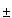
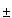

) - f(x) can be made smaller than any given quantity provided can be taken as small as we please.
) - f(x) can be made smaller than any given quantity provided can be taken as small as we please.
 0 with the property that for no positive quantity which is smaller than 0 does the absolute value of f (X  h) - f (X) exceed . A function f (x) is continuous from x = a to x = b if for every single value x = X between a and b, including x = a and x = b, it is continuous.
0 with the property that for no positive quantity which is smaller than 0 does the absolute value of f (X  h) - f (X) exceed . A function f (x) is continuous from x = a to x = b if for every single value x = X between a and b, including x = a and x = b, it is continuous.
| Previous page (Some definitions of the concept of a limit) | Contents | Next page (Some Early History of Set Theory) |